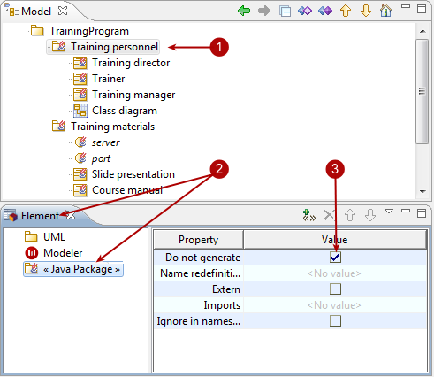
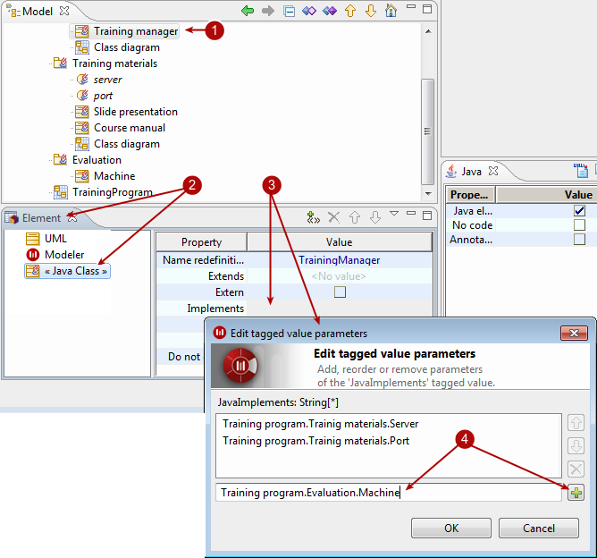

Tagged values are added in the “Element” view to elements selected in the “Model” view.
The “Element” view contains a tagged value display table, which presents all the tagged values available for addition to the selected element. Available tagged values are presented by module.
There are three kinds of tagged value:
Tagged values which have no parameters
Tagged values which have one parameter
Tagged values which can have several parameters

Steps:
Select the element you want to add a tagged value to.
Open the “Element” view and then the appropriate group.
Tagged values which have no parameters are added or removed simply by checking or unchecking their associated tickbox.
Steps:
Select the element you want to add a tagged value to.
Open the “Element” view and then the appropriate group.
Tagged values which have one parameter are added to the selected element when you enter a value for the parameter. Click on the “Value column” field for the tagged value you want to add and enter a value for the parameter. Confirm by pressing Enter.

Steps:
Select the element you want to add a tagged value to.
Open the “Element” view and then the appropriate group.
Tagged values which have several parameters are added to the selected element when you enter the values for the different parameters Click in the “Value column” field for the tagged value you want to add. The “Edit tagged value parameters” window then appears.
Enter the different parameter values (with their complete namespace) and click on  to validate each entry. To finish, click on OK.
to validate each entry. To finish, click on OK.